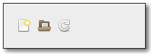

Gtk.Toolbar¶
Example¶

- Subclasses:
None
Methods¶
- Inherited:
Gtk.Container (35), Gtk.Widget (278), GObject.Object (37), Gtk.Buildable (10), Gtk.Orientable (2), Gtk.ToolShell (9)
- Structs:
Gtk.ContainerClass (5), Gtk.WidgetClass (12), GObject.ObjectClass (5)
class |
|
|
|
|
|
|
|
|
|
|
|
|
|
|
|
|
|
|
|
|
|
|
Virtual Methods¶
- Inherited:
Gtk.Container (10), Gtk.Widget (82), GObject.Object (7), Gtk.Buildable (10), Gtk.ToolShell (9)
|
|
|
|
|
Properties¶
- Inherited:
Name |
Type |
Flags |
Short Description |
|---|---|---|---|
r/w/en |
Size of icons in this toolbar |
||
r/w |
Whether the icon-size property has been set |
||
r/w/en |
If an arrow should be shown if the toolbar doesn’t fit |
||
r/w/en |
How to draw the toolbar |
Child Properties¶
Name |
Type |
Default |
Flags |
Short Description |
|---|---|---|---|---|
|
r/w |
Whether the item should receive extra space when the toolbar grows |
||
|
r/w |
Whether the item should be the same size as other homogeneous items |
Style Properties¶
- Inherited:
Name |
Type |
Default |
Flags |
Short Description |
|---|---|---|---|---|
|
r |
Type of bevel around toolbar buttons |
||
|
|
d/r |
Amount of border space between the toolbar shadow and the buttons |
|
|
|
r |
Maximum amount of space an expandable item will be given |
|
|
d/r |
Style of bevel around the toolbar |
||
|
|
d/r |
Size of spacers |
|
|
d/r |
Whether spacers are vertical lines or just blank |
Signals¶
- Inherited:
Name |
Short Description |
|---|---|
A keybinding signal used internally by GTK+. |
|
Emitted when the orientation of the toolbar changes. |
|
Emitted when the user right-clicks the toolbar or uses the keybinding to display a popup menu. |
|
Emitted when the style of the toolbar changes. |
Fields¶
- Inherited:
Name |
Type |
Access |
Description |
|---|---|---|---|
container |
r |
Class Details¶
- class Gtk.Toolbar(**kwargs)¶
- Bases:
- Abstract:
No
- Structure:
A toolbar is created with a call to
Gtk.Toolbar.new().A toolbar can contain instances of a subclass of
Gtk.ToolItem. To add aGtk.ToolItemto the a toolbar, useGtk.Toolbar.insert(). To remove an item from the toolbar useGtk.Container.remove(). To add a button to the toolbar, add an instance ofGtk.ToolButton.Toolbar items can be visually grouped by adding instances of
Gtk.SeparatorToolItemto the toolbar. If theGtk.Toolbarchild property “expand” isTrueand the propertyGtk.SeparatorToolItem:drawis set toFalse, the effect is to force all following items to the end of the toolbar.By default, a toolbar can be shrunk, upon which it will add an arrow button to show an overflow menu offering access to any
Gtk.ToolItemchild that has a proxy menu item. To disable this and request enough size for all children, callGtk.Toolbar.set_show_arrow() to setGtk.Toolbar:show-arrowtoFalse.Creating a context menu for the toolbar can be done by connecting to the
Gtk.Toolbar::popup-context-menusignal.- CSS nodes
Gtk.Toolbarhas a single CSS node with name toolbar.- get_drop_index(x, y)[source]¶
- Parameters:
- Returns:
The position corresponding to the point (x, y) on the toolbar.
- Return type:
Returns the position corresponding to the indicated point on self. This is useful when dragging items to the toolbar: this function returns the position a new item should be inserted.
x and y are in self coordinates.
Added in version 2.4.
- get_icon_size()[source]¶
- Returns:
the current icon size for the icons on the toolbar.
- Return type:
Retrieves the icon size for the toolbar. See
Gtk.Toolbar.set_icon_size().
- get_item_index(item)[source]¶
- Parameters:
item (
Gtk.ToolItem) – aGtk.ToolItemthat is a child of self- Returns:
the position of item on the toolbar.
- Return type:
Returns the position of item on the toolbar, starting from 0. It is an error if item is not a child of the toolbar.
Added in version 2.4.
- get_n_items()[source]¶
- Returns:
the number of items on the toolbar
- Return type:
Returns the number of items on the toolbar.
Added in version 2.4.
- get_nth_item(n)[source]¶
- Parameters:
n (
int) – A position on the toolbar- Returns:
The n'th
Gtk.ToolItemon self, orNoneif there isn’t an n'th item.- Return type:
Gtk.ToolItemorNone
Returns the n'th item on self, or
Noneif the toolbar does not contain an n'th item.Added in version 2.4.
- get_relief_style()[source]¶
- Returns:
The relief style of buttons on self.
- Return type:
Returns the relief style of buttons on self. See
Gtk.Button.set_relief().Added in version 2.4.
- get_show_arrow()[source]¶
-
Returns whether the toolbar has an overflow menu. See
Gtk.Toolbar.set_show_arrow().Added in version 2.4.
- get_style()[source]¶
- Returns:
the current style of self
- Return type:
Retrieves whether the toolbar has text, icons, or both . See
Gtk.Toolbar.set_style().
- insert(item, pos)[source]¶
- Parameters:
item (
Gtk.ToolItem) – aGtk.ToolItempos (
int) – the position of the new item
Insert a
Gtk.ToolIteminto the toolbar at position pos. If pos is 0 the item is prepended to the start of the toolbar. If pos is negative, the item is appended to the end of the toolbar.Added in version 2.4.
- set_drop_highlight_item(tool_item, index_)[source]¶
- Parameters:
tool_item (
Gtk.ToolItemorNone) – aGtk.ToolItem, orNoneto turn of highlightingindex (
int) – a position on self
Highlights self to give an idea of what it would look like if item was added to self at the position indicated by index_. If item is
None, highlighting is turned off. In that case index_ is ignored.The tool_item passed to this function must not be part of any widget hierarchy. When an item is set as drop highlight item it can not added to any widget hierarchy or used as highlight item for another toolbar.
Added in version 2.4.
- set_icon_size(icon_size)[source]¶
- Parameters:
icon_size (
Gtk.IconSize) – TheGtk.IconSizethat stock icons in the toolbar shall have.
This function sets the size of stock icons in the toolbar. You can call it both before you add the icons and after they’ve been added. The size you set will override user preferences for the default icon size.
This should only be used for special-purpose toolbars, normal application toolbars should respect the user preferences for the size of icons.
- set_show_arrow(show_arrow)[source]¶
- Parameters:
show_arrow (
bool) – Whether to show an overflow menu
Sets whether to show an overflow menu when self isn’t allocated enough size to show all of its items. If
True, items which can’t fit in self, and which have a proxy menu item set byGtk.ToolItem.set_proxy_menu_item() orGtk.ToolItem::create-menu-proxy, will be available in an overflow menu, which can be opened by an added arrow button. IfFalse, self will request enough size to fit all of its child items without any overflow.Added in version 2.4.
- set_style(style)[source]¶
- Parameters:
style (
Gtk.ToolbarStyle) – the new style for self.
Alters the view of self to display either icons only, text only, or both.
- unset_icon_size()[source]¶
Unsets toolbar icon size set with
Gtk.Toolbar.set_icon_size(), so that user preferences will be used to determine the icon size.
- unset_style()[source]¶
Unsets a toolbar style set with
Gtk.Toolbar.set_style(), so that user preferences will be used to determine the toolbar style.
- do_orientation_changed(orientation) virtual¶
- Parameters:
orientation (
Gtk.Orientation)
- do_style_changed(style) virtual¶
- Parameters:
style (
Gtk.ToolbarStyle)
Signal Details¶
- Gtk.Toolbar.signals.focus_home_or_end(toolbar, focus_home)¶
- Signal Name:
focus-home-or-end- Flags:
- Parameters:
toolbar (
Gtk.Toolbar) – The object which received the signalfocus_home (
bool) –Trueif the first item should be focused
- Returns:
- Return type:
A keybinding signal used internally by GTK+. This signal can’t be used in application code
- Gtk.Toolbar.signals.orientation_changed(toolbar, orientation)¶
- Signal Name:
orientation-changed- Flags:
- Parameters:
toolbar (
Gtk.Toolbar) – The object which received the signalorientation (
Gtk.Orientation) – the newGtk.Orientationof the toolbar
Emitted when the orientation of the toolbar changes.
- Signal Name:
popup-context-menu- Flags:
- Parameters:
toolbar (
Gtk.Toolbar) – The object which received the signalx (
int) – the x coordinate of the point where the menu should appeary (
int) – the y coordinate of the point where the menu should appearbutton (
int) – the mouse button the user pressed, or -1
- Returns:
- Return type:
Emitted when the user right-clicks the toolbar or uses the keybinding to display a popup menu.
Application developers should handle this signal if they want to display a context menu on the toolbar. The context-menu should appear at the coordinates given by x and y. The mouse button number is given by the button parameter. If the menu was popped up using the keybaord, button is -1.
- Gtk.Toolbar.signals.style_changed(toolbar, style)¶
- Signal Name:
style-changed- Flags:
- Parameters:
toolbar (
Gtk.Toolbar) – The object which received the signalstyle (
Gtk.ToolbarStyle) – the newGtk.ToolbarStyleof the toolbar
Emitted when the style of the toolbar changes.
Property Details¶
- Gtk.Toolbar.props.icon_size¶
- Name:
icon-size- Type:
- Default Value:
- Flags:
The size of the icons in a toolbar is normally determined by the toolbar-icon-size setting. When this property is set, it overrides the setting.
This should only be used for special-purpose toolbars, normal application toolbars should respect the user preferences for the size of icons.
Added in version 2.10.
- Gtk.Toolbar.props.icon_size_set¶
-
Is
Trueif the icon-size property has been set.Added in version 2.10.
- Gtk.Toolbar.props.show_arrow¶
- Name:
show-arrow- Type:
- Default Value:
- Flags:
If an arrow should be shown if the toolbar doesn’t fit
- Gtk.Toolbar.props.toolbar_style¶
- Name:
toolbar-style- Type:
- Default Value:
- Flags:
How to draw the toolbar